Grupo de investigación adscrito a la Escuela de Ingeniería Civil de la Universidad Industrial de Santander, activo desde 1998. Soluciones en SIG, infraestructura, movilidad y gestión del riesgo para Colombia y la región.
Con el ánimo de dar soluciones concretas a problemas específicos de los diferentes sectores de la sociedad colombiana, nace el grupo GEOMÁTICA. Un grupo de investigación y desarrollo que da inicio a sus labores en mayo de 1998. A lo largo de estos años ha logrado consolidar su labor a través del uso de herramientas apoyadas en los sistemas de información geográfica, así como en proyectos enfocados en la generación de planes de ordenamiento territorial, planes de infraestructura vial, estudios de ordenamiento y manejo de cuencas hidrográficas, diseño de sistemas de transporte masivo, planes de movilidad urbana de los municipios del área metropolitana de Bucaramanga, diseño de soluciones viales en los principales sectores críticos de movilidad del Municipio de Bucaramanga y del Municipio de Barrancabermeja, diseños de proyectos de transformación del espacio público del área urbana del Municipio de Barrancabermeja, entre otros proyectos de gran impacto para la región.
Completa el formulario de pre-registro y recibe información detallada sobre el programa, requisitos y proceso de admisión.
Pre-registro Maestría ↗Esta iniciativa buscó generar un impacto positivo en la formación académica y humana del público asistente, promoviendo el acceso libre a conocimiento especializado sobre infraestructura resiliente y sostenible. Las charlas fueron ofrecidas sin costo por profesionales comprometidos con el desarrollo del país, fortaleciendo el vínculo entre la universidad y la sociedad.
Se abordaron problemáticas tangibles como el cambio climático, la innovación para el desarrollo rural y la sostenibilidad en obras civiles, entre otros. Además, se fomentó la participación activa de los estudiantes del Semillero en la organización de los eventos, fortaleciendo habilidades como el trabajo colaborativo, la responsabilidad social y el liderazgo.
Las charlas estuvieron dirigidas a estudiantes universitarios, miembros de la Comisión de Jóvenes de la Sociedad Santandereana de Ingenieros y de la SEIC. La participación no tuvo costo para el público.
📖 A la izquierda encontrarás la cartilla resumen de las charlas. Las charlas virtuales grabadas están disponibles abajo.
Contribuimos al desarrollo de ambientes que promuevan la salud integral mediante investigación, diseño y gestión con enfoque en innovación social. Abordamos salud pública, vectores epidemiológicos y calidad de infraestructura.
Entendemos cómo las comunidades y sistemas de infraestructura interactúan con riesgos naturales, identificamos medidas de mitigación y fortalecemos la capacidad de respuesta con enfoque social y ambiental.
Proponemos soluciones adaptadas a la realidad local: reducción de congestión, mejora del transporte público, modos sostenibles, eficiencia energética y conectividad territorial resiliente.


Geóloga egresada de la UIS (2021) y Especialista en Geotecnia Ambiental de la UDES (2024). Su investigación explora modelos emergentes para la predicción de susceptibilidad a remoción en masa.

Ingeniero Civil de la UIS (2025). Su investigación se centra en metodologías para la extracción automática de activos viales en vías terciarias en la región de Santander.
Hemos ejecutado proyectos de consultoría, interventoría y asesoría técnica, denominados de extensión, para diversas entidades de Colombia y participamos en proyectos de investigación en alianza con otros grupos. Algunas entidades con las cuales la Universidad, por medio de Geomática, ha mantenido vínculos contractuales y de desarrollo de convenios son:
Hemos ejecutado proyectos de consultoría, interventoría y asesoría técnica, denominados de extensión, para diversas entidades de Colombia y participamos en proyectos de investigación en alianza con otros grupos. Algunas entidades con las cuales la Universidad, por medio de Geomática, ha mantenido vínculos contractuales y de desarrollo de convenios son:
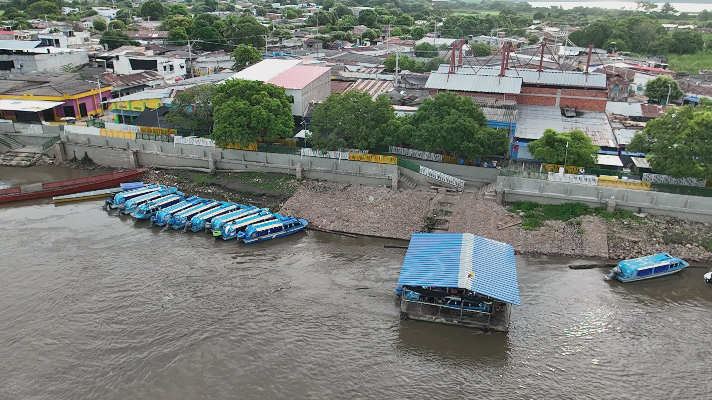
Interventoría para la fabricación, suministro, transporte, instalación y puesta en funcionamiento de 88 embarcaderos fluviales flotantes.
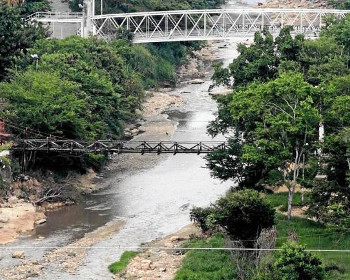
Modelo Nacional de Riesgo Sísmico de Colombia (MNRS) fases 1, 2 y 3.
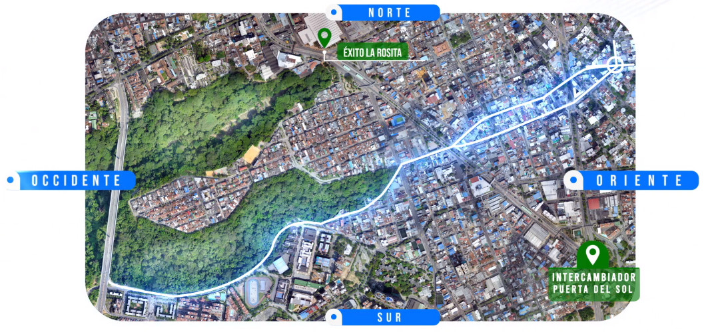
Estudios y diseños de la calle 53-54, conexión oriente — occidente, de Bucaramanga.
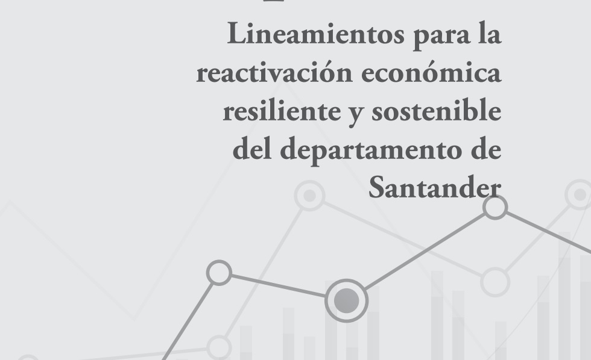
Lineamientos para la recuperación económica del departamento de Santander por la COVID-19.
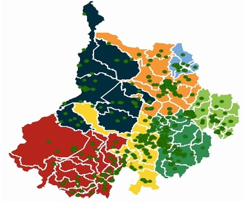
Consulta de información georreferenciada de obras y gestiones de la administración departamental.
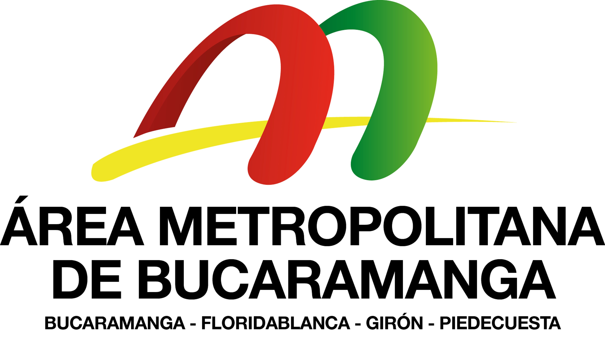
Aunar esfuerzos entre el AMB y UIS para asesoría técnica, socioeconómica, normativa y ambiental para la construcción del nuevo relleno sanitario.
Aunar esfuerzos entre el AMB y la UIS para elaborar el estudio de factibilidad y los diseños de ingeniería de detalle para la galería de drenaje en el Barrio Esperanza II.
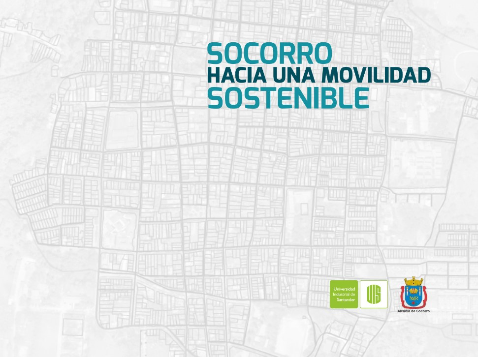
Formulación del plan maestro de movilidad urbana del municipio de Socorro.
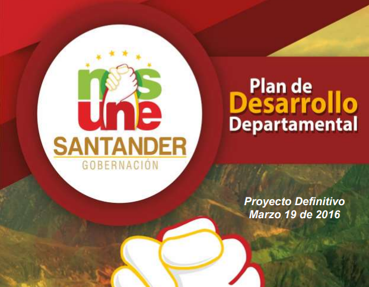
Formulación del Plan de Desarrollo Departamental "Santander Nos Une 2016-2019".
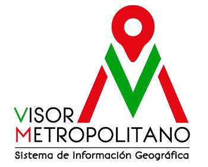
Sistema de Información Geográfica del AMB — Fase II.
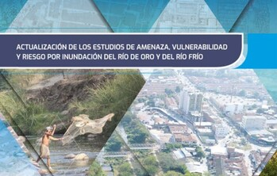
Actualización de los estudios de amenaza, vulnerabilidad y riesgo por inundación del Río de Oro y del Río Frío.
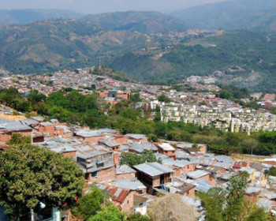
Estudio de amenaza, vulnerabilidad y riesgo por movimientos en masa del sector Norte de Bucaramanga.
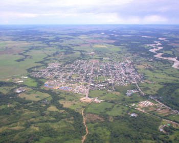
Formulación del Plan de Gestión Integral del Recurso Hídrico Urbano del Municipio de Aguazul, Casanare.

Sistema de Información Geográfica del AMB — Fase I.
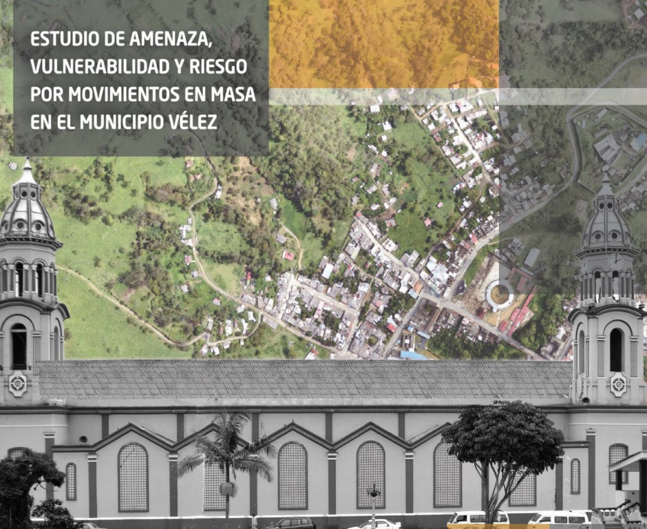
Estudio de amenaza, vulnerabilidad y riesgo por movimientos en masa del Municipio de Vélez, Santander.
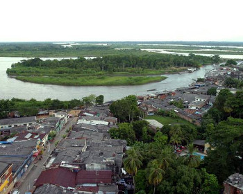
Diseño de la infraestructura prioritaria para el tránsito de vehículos de carga y pasajeros sobre el corredor Puerta Norte – Calle 71.
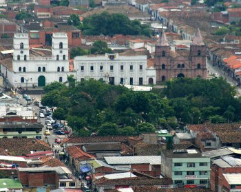
Elaboración de estudios y diseños arquitectónicos, urbanísticos y de ingeniería para la construcción del parque contemplativo de Piedecuesta, Santander.
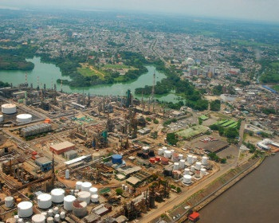
Proyectos estratégicos y programáticos del Plan de Desarrollo Municipal — Barrancabermeja Ciudad Futuro 2012-2015.
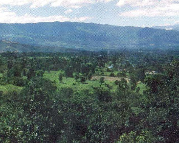
Ajuste a los componentes ambiental y geotécnico del macroproyecto de interés social del valle de Guatiguará Piedecuesta, 'Pienta'.
Elaboración, edición, diagramación y publicación de los documentos resumen de los planes maestro de movilidad urbana.